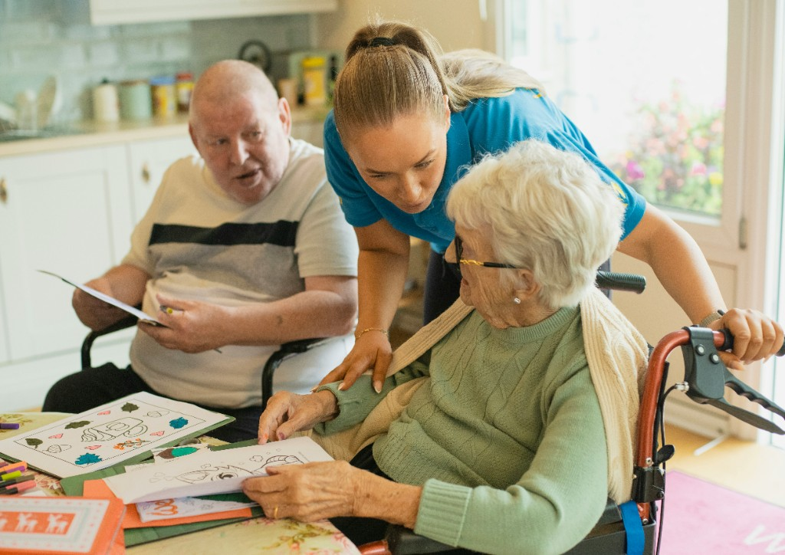

Seniors
Support with daily routines, personal care, mobility, meals, companionship, and maintaining independence at home.
Compassionate | Trustworthy | Reliable | Professional
Personalized, non-medical support for seniors, adults with disabilities or special needs, recovering clients, and families who need respite or palliative support — delivered with dignity, reliability, and genuine care.
Founded by Personal Support Worker Ridchalyn Peralta, with 15 years of hands-on caregiving experience.

When someone you love needs extra support, finding the right caregiver can feel overwhelming. Lynn’s Caregiving Services provides compassionate, non-medical in-home care designed to support safety, comfort, independence, and dignity — while giving families greater peace of mind.
Every client has different routines, preferences, and care needs. Our team works from the client’s care plan and coordinates closely to provide dependable support that feels respectful, personal, and consistent.
Warm, dependable, non-medical care centered around the individual needs of each client and family.
Support with daily routines, personal care, mobility, meals, companionship, and maintaining independence at home.
Respectful assistance tailored to the individual’s routines, abilities, preferences, and care plan.
Practical daily support for people recovering at home who need help with routines, mobility, meals, and personal care.
Compassionate support that helps clients remain comfortable while giving family caregivers dependable assistance.
Practical help with everyday living, guided by the client’s care plan and preferences.
Bathing, showering, dressing, grooming, oral hygiene, toileting, skincare, and incontinence care.
Learn moreWalking assistance, transfers, wheelchair support, and gentle physical activity according to the care plan.
Learn moreMeal planning, light cooking, reheating, dietary support, and feeding assistance when needed.
Learn moreConversation, meaningful engagement, hobbies, social interaction, and support for dignity and independence.
Learn moreMedication reminders, non-medical observation, and communication with family or the appropriate care contact when changes are noticed.
Learn moreDependable assistance that helps clients remain comfortable while giving family caregivers time to rest.
View all servicesTrust is built through experience, screened caregivers, personalized support, and clear communication.
Founded by a Personal Support Worker with 15 years of hands-on caregiving experience.
Caregivers are selected with attention to police background checks and valid CPR and First Aid certifications.
Support is guided by the client’s care plan, routines, preferences, and individual needs.
Management and PSWs work together to support consistent, coordinated care.
Care can be arranged across weekdays, weekends, holidays, and different shifts based on care needs and availability.
Families can reach dedicated phone support around the clock for questions and concerns.
A simple process designed to make requesting care feel clear and manageable.
Complete the care request form or call us to share your situation, schedule, and support needs.
We discuss the client’s routines, preferences, care plan, and the type of support required.
We coordinate suitable PSW support and maintain communication as care needs evolve.

Caregiving has been the focus of Ridchalyn Peralta’s career for 15 years. Lynn’s Caregiving Services was founded in 2026 to bring that experience into a service built around compassion, dignity, reliability, and respectful support for clients and their families.
The goal is simple: help each client feel safer, more comfortable, and more supported at home while protecting the independence and dignity that matter to them.
Tell us what support you need and we will help you take the next step.